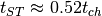

Bases: gammapy.astro.source.SNR
SNR model according to Truelove & McKee (1999).
Reference: http://adsabs.harvard.edu/abs/1999ApJS..120..299T
Attributes Summary
| sedov_taylor_begin | Characteristic time scale when the Sedov-Taylor phase of the SNR’s |
Methods Summary
| radius([t]) | Outer shell radius at age t. |
| radius_reverse_shock(t) | Reverse shock radius at age t . |
Attributes Documentation
Characteristic time scale when the Sedov-Taylor phase of the SNR’s evolution begins given by 
Methods Documentation